おかえりやす。
季節のおばんざいと、ええお酒。円町の、ちいさなカウンターで。
Sake & Obanzai
Komachiyo — Kyoto, Enmachi
営業時間 17:30–22:00
About
お店のこと
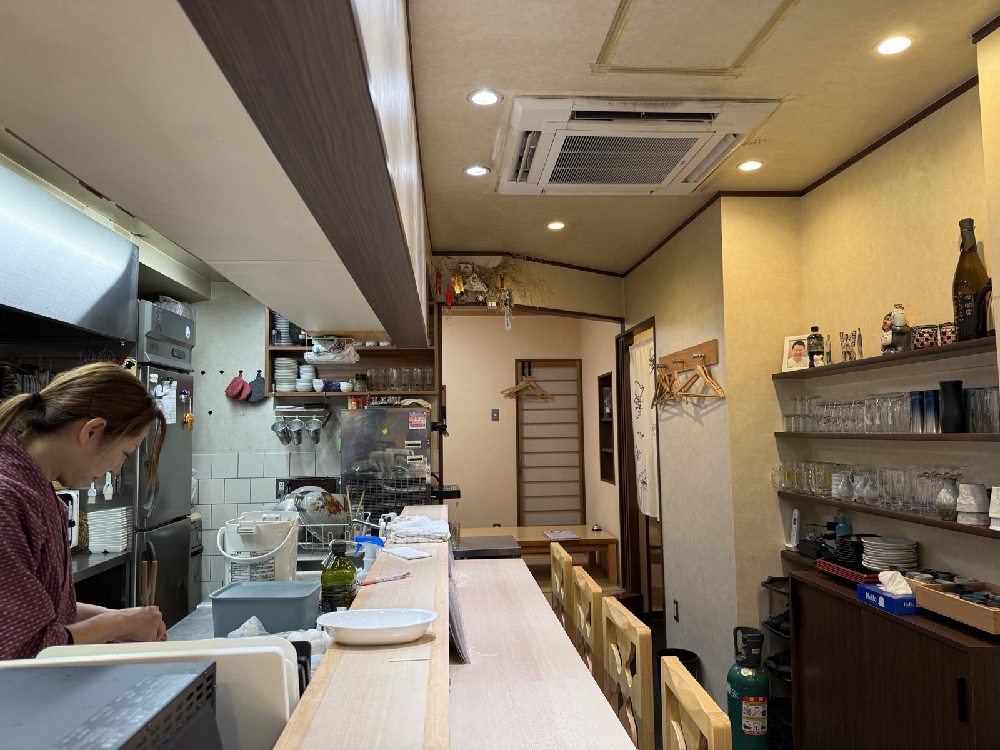
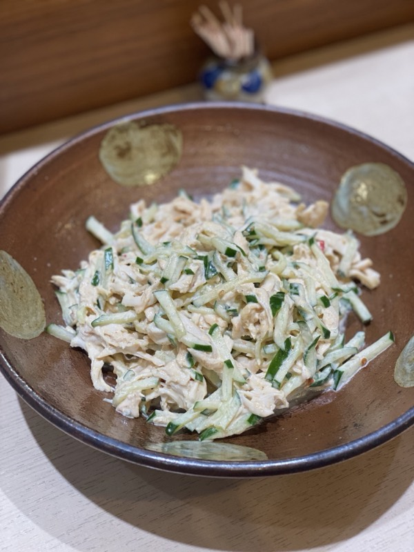
毎日、炊いて、和えて、焼いて。
季節の野菜と相談しながら、
手づくりのおばんざいを。
JR円町駅から少し歩いた、西ノ京の小さなお店です。家のごはんのようにほっとできて、でもちょっとうれしい。そんなひと皿を、毎日お店で仕込んでいます。
お酒は季節ごとに入れ替わる日本酒に、芋・麦の焼酎もいろいろと。おひとりさまも、お仕事帰りの一杯も、どうぞお気軽に。
ご友人やご家族、職場の皆さんとの飲み会やお食事には、4名様用のテーブル席も2卓ございます。おばんざいを何品か頼んで、みんなで少しずつ取り分けるのもおすすめです。人数が決まりましたら、お電話でお気軽にご相談ください。
- 10カウンター席
- 2テーブル席4名様用
- 3.102026年 開店
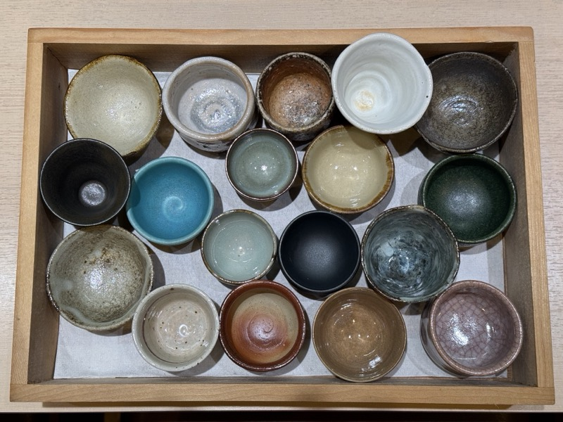
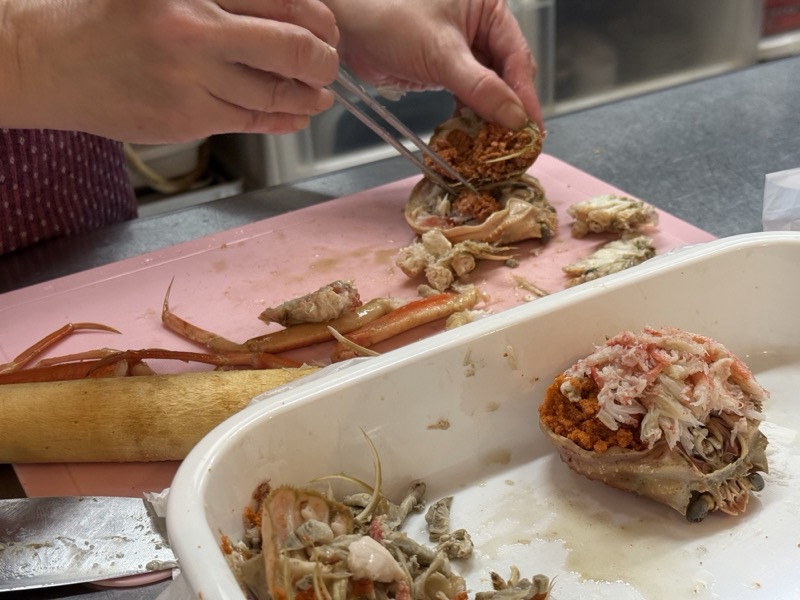
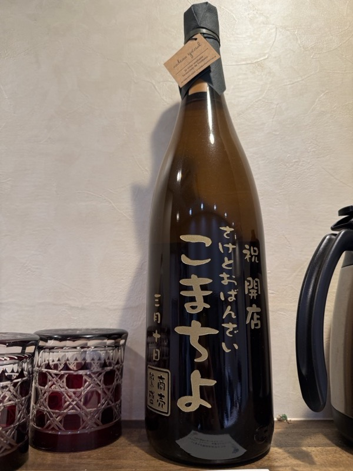
Today's Obanzai
日々のおばんざい
内容は日替わり。その日の仕入れと季節で、少しずつ変わります。
最新のおばんざいは Instagram でお知らせしています。
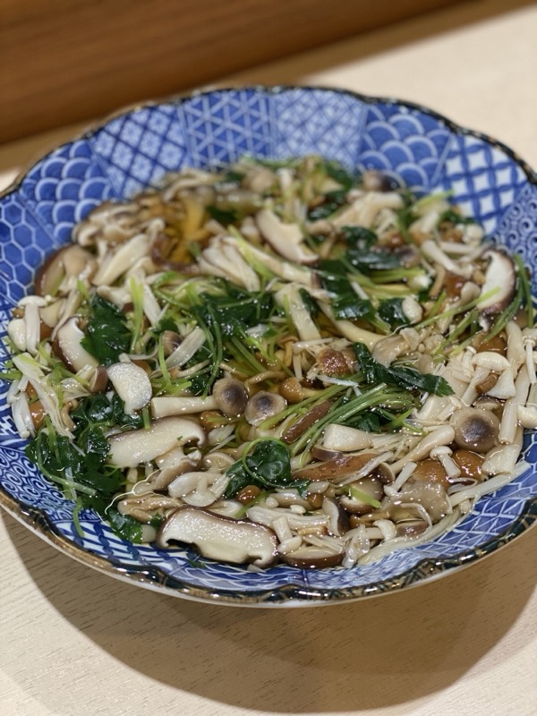
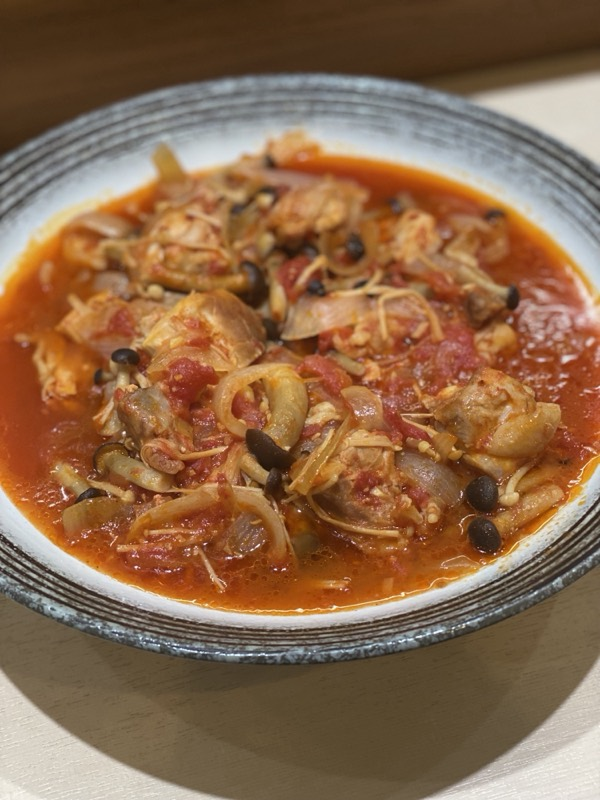
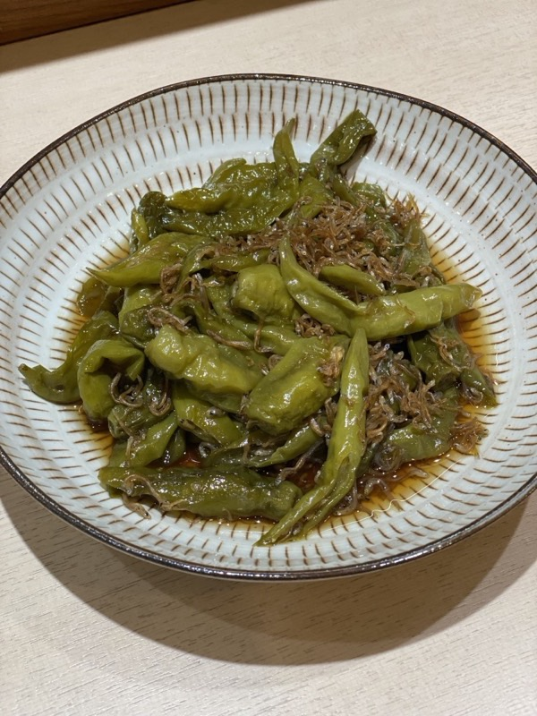
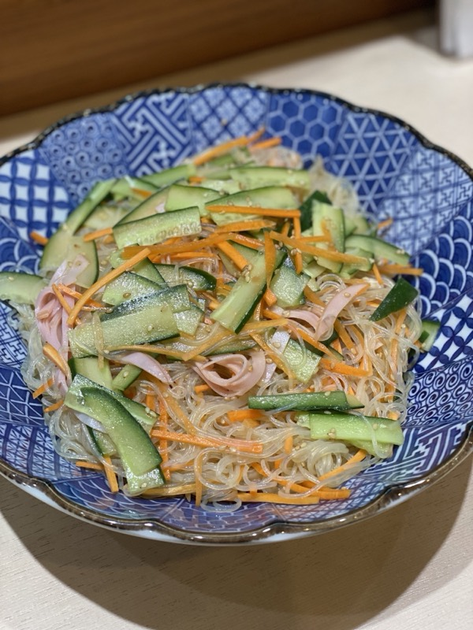
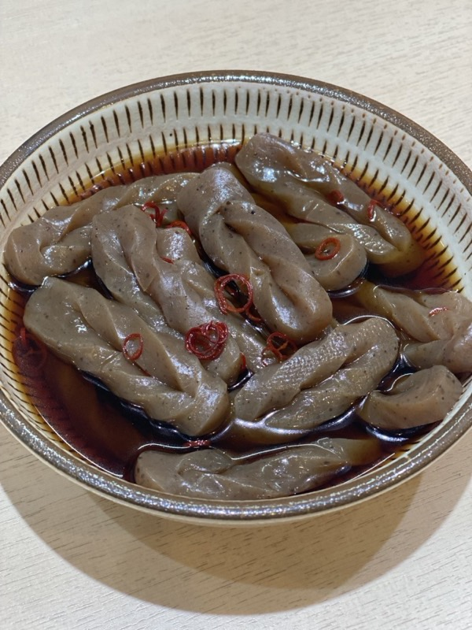
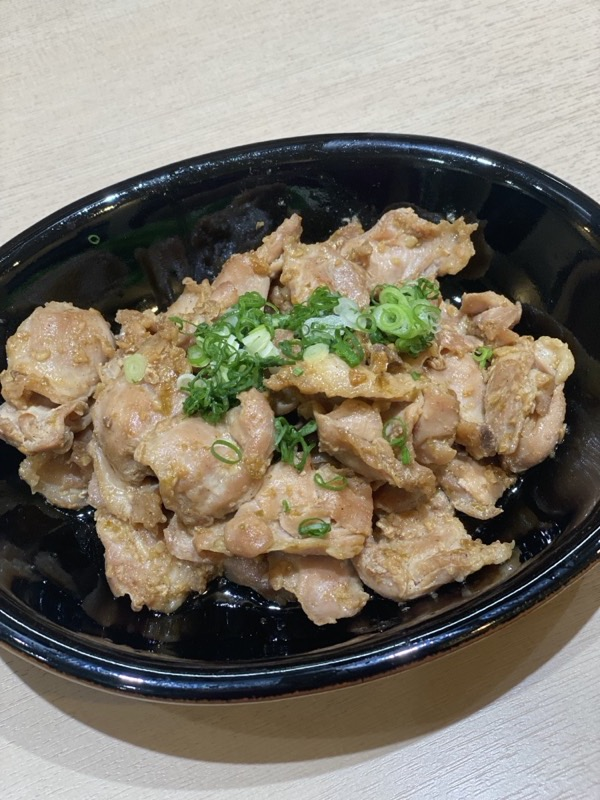
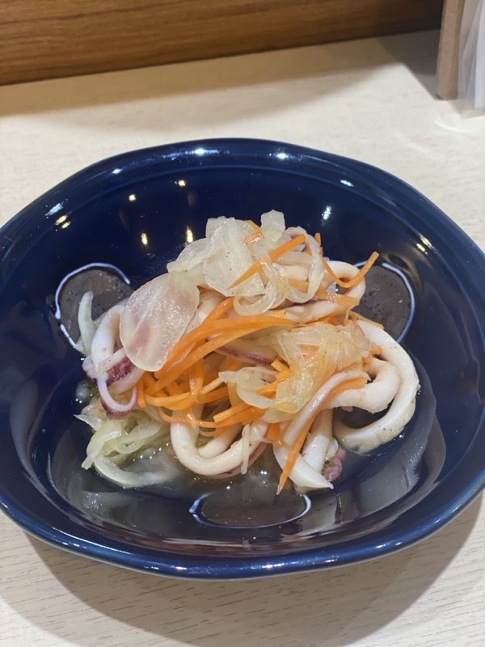
Drink
お酒
日本酒は季節ごとに入れ替わります。
焼酎は芋・麦あわせて二十種以上。
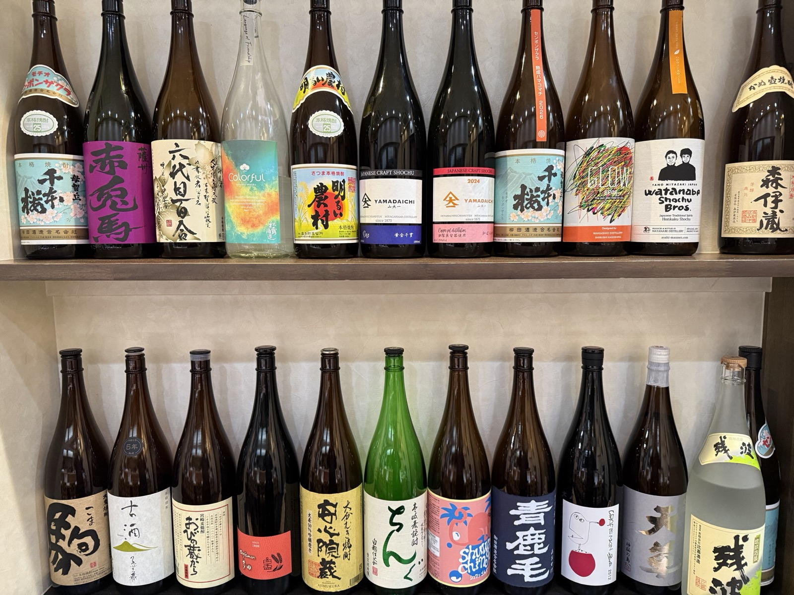
日本酒すべて 990 円
- 岩手
南部美人秋あがり
心地よい香りと、口の中で広がる米の旨味と甘味の純米酒。
- 福島
天明秋酒 お月見
甘い香りと、柔らかく滑らかな口当たりが特徴の純米吟醸酒。
- 宮城
萩の鶴
米の円やかで、コク深い旨味を表現した純米吟醸酒。
- 佐賀
天吹ポセイドン
シャープでドライな味わいの中に、ほのかな果実味の純米。
- 奈良
しのみねのどか 黒ラベル
旨味とミルキーな酸のバランスが良く、キレも良い一本。
- 新潟
北雪秋あがり
柔らかな口当たりと、豊かな旨味の純米酒。
- 福島
末廣猫魔の雫 ひやおろし
フルーティーな香りで、ふくらみのある酒質の純米吟醸。
- 千葉
甲子きのえね ひやおろし
透明感と深みのある味わいの、大辛口純米酒。
- 福井
永平寺白龍秋あがり
まろやかな口当たりに、心地よくまとまりのある酸が特徴の特別純米。
- 和歌山
鉄砲隊
純米吟醸酒の香りと、キレのある飲み口の純米吟醸。
※ 銘柄は季節により入れ替わります。
芋焼酎Imo
- 森伊蔵1,300
- 千本桜熟成はまこまち600
- 千本桜550
- 六代目百合600
- 山大一 紅はるか600
- 山大一 黄金千貫600
- 紫の赤兎馬600
- 明るい農村600
- colorful600
- Glow Epo8600
- WATANABE SHOCHU BROS600
麦焼酎 ほかMugi & more
- ちんぐ550
- シュワッちんぐ600
- 駒550
- 安心院蔵550
- 青鹿毛600
- クラフトマン多田550
- クラフトマン多田アーティストラベル600
- おびの蔵から550
- 古酒600
- 天草550
- 残波泡盛550
※ 烏龍割り・ソーダ割りは ＋50円。
ビールBeer
- 生ビールアサヒスーパードライ600
- 瓶ビールサッポロラガー700
- ノンアルコールアサヒドライゼロ500
酎ハイChu-Hi
- レモン酎ハイ550
- ゆず酎ハイ550
- 巨峰酎ハイ550
- シークヮーサー酎ハイ550
- トマト酎ハイ650
- すだち冷酒日本酒リキュール550
ウイスキーWhisky
- 余市990
- 碧Ao880
- 知多850
- ニッカセッション600
- 角550
- ニッカフロンティア550
ワインWine
- 赤ワイングラス800
- 赤ワインボトル4,000
- 白ワイングラス800
- 白ワインボトル4,000
果実酒Fruit liqueur
- あらごし梅酒600
- あらごしゆず600
ソーダ割りは ＋50円
ソフトドリンクSoft drink
- ウーロン茶・コーラ・ジンジャーエール・オレンジ・カルピス各350
※ 表示価格はすべて税込です。
Q & A
よくあるご質問
グループや数人でも利用できますか？
大歓迎です。カウンター10席のほか、4名様用のテーブル席が2卓ございます。仕事帰りの飲み会や、ご家族・ご友人とのお食事にもどうぞ。人数が決まりましたら、お電話（075-461-5580）でお気軽にご相談ください。
ひとりでも入りやすいですか？
カウンター席が中心のお店なので、おひとりさまもお気軽にどうぞ。お仕事帰りの一杯にもおすすめです。
どんな料理がありますか？
季節の野菜を使った手づくりのおばんざいが中心です。内容は日替わりで、焼きもの・揚げもの・〆のご飯ものもございます。最新のおばんざいは Instagram でお知らせしています。
お酒はどんな種類がありますか？
日本酒は季節ごとに入れ替わる約10銘柄（すべて990円）、芋・麦の焼酎は20種以上ご用意しています。ビール、酎ハイ、ウイスキー、ワイン、果実酒、ソフトドリンクもございます。お酒の一覧を見る
営業時間と定休日を教えてください。
月曜〜土曜の17:30〜22:00です。日曜日が定休日で、ほかに月2回ほど連休をいただいています。お休みの予定は Instagram でお知らせしています。
最寄り駅はどこですか？
JR嵯峨野線「円町」駅から徒歩8分です。地下鉄東西線「西大路御池」駅から徒歩15分、阪急京都線「西院」駅から徒歩25分です。地図を見る
クレジットカードは使えますか？
現金のほか、VISA・Mastercard・American Express・JCBのクレジットカードをご利用いただけます。
Access
ご案内
- 店名
- さけとおばんざい こまちよ
- 住所
- 〒604-8452
京都府京都市中京区西ノ京伯楽町25-2 - 営業時間
- 17:30 – 22:00月曜〜土曜
- 定休日
- 日曜日ほか月に2回ほど連休をいただきます。お休みの予定は Instagram でお知らせしています。
- お席
- カウンター 10席テーブル 2卓（各4名様）
- お支払い
- 現金・クレジットカードVISAMastercardAMEXJCB
- アクセス
-
- JR嵯峨野線「円町」駅徒歩 8分
- 地下鉄東西線「西大路御池」駅徒歩 15分
- 阪急京都線「西院」駅徒歩 25分